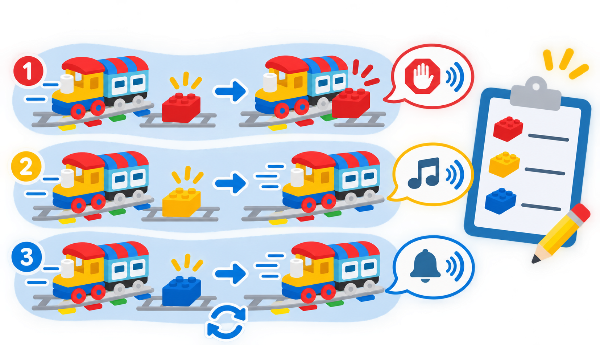

Maons d’acció: sons, llums i aturades
Investigar com els maons d’acció de colors canvien el viatge del tren i registrar les respostes observades.
🌱 Situació, repte i intenció
- Identificar els maons d’acció disponibles i associar color amb resposta observada.
- Ordenar els esdeveniments d’un trajecte i explicar-ne la relació de causa i efecte.
- Distingir les funcions verificades de les que poden variar segons la versió del tren o del kit.
🎯 Aprenentatges i vocabulari
- Motorització i lectura dels maons d’acció que passen sota el tren.
- Sensor òptic inferior: interpreta els maons d’acció codificats de la via; no mesura el color de superfícies ni detecta obstacles.
- Maó roig: ordre d’aturada del tren.
- Maons groc i blau: sons associats al tren, que cal escoltar i descriure en el model disponible.
- Maó blanc: encén o apaga la llum del tren segons la lliçó oficial.
- Maó verd: pot ajudar el tren a tornar cap a l’estació; el recorregut resultant depén de la via i cal provar-lo.
🧰 Materials i preparació
- Locomotora Coding Express i vies DUPLO del centre.
- Maons d’acció de colors disponibles: roig, groc, blau, blanc i verd si formen part del kit.
- Una via recta amb espai suficient abans i després de cada maó; estació o túnel de joguet opcional.
- Targetes de colors, full de registre amb columnes «predicció», «resposta observada» i «repetició», i llapis.
Comproveu que el tren està carregat o té piles en bon estat i que les vies estan ben unides. Feu una prova per maó, en una zona lliure. La documentació LEGO confirma el roig per aturar, el groc i el blau per a respostes sonores, i el blanc per encendre o apagar la llum del tren; verifiqueu la resposta del vostre model abans d’ensenyar-la com a regla universal.
📅 Seqüència didàctica
Prepareu la predicció
Desenvolupament del pas
Poseu un únic maó d’acció en un tram recte i deixeu espai lliure després. Mostreu el color sense explicar-ne la resposta. El sensor òptic de la part inferior del tren llig el codi del maó quan passa per damunt; no és un sensor de color ambiental. Cada equip tria una predicció —aturar-se, fer un so, canviar la llum o una altra— i la representa amb una targeta o un dibuix.
Proveu el roig i els sons
Desenvolupament del pas
Feu passar el tren pel maó roig i anoteu si s’atura. Després, repetiu amb el groc i el blau per separat. Descriviu els sons que sentiu amb paraules pròpies o pictogrames; no cal imitar exactament un xiulet o un so de càrrega si la resposta del model és diferent. Torneu a provar cada color per comprovar que el resultat es repeteix.
Investigueu el maó blanc
Desenvolupament del pas
Observeu primer si la llum del tren està encesa. Col·loqueu el maó blanc i registreu si la llum canvia d’estat. Repetiu-lo una vegada més i compteu quantes vegades passa el tren pel maó. Aquesta prova ajuda a descobrir si la resposta alterna en cada pas.
Exploreu el maó verd amb una ruta
Desenvolupament del pas
Si el vostre kit inclou el maó verd, dissenyeu un recorregut amb estació i punt de retorn. Feu una predicció, proveu el maó i observeu com afecta el trajecte. Canvieu la posició del maó només després d’aturar el tren. Registreu la resposta sense afirmar que sempre inverteix el motor: la guia oficial el presenta com una ajuda per tornar i el comportament observat depén de la disposició de la via.

🧪 Evidències i avaluació
Completeu una taula per als colors que tingueu. Si una prova no coincideix amb la predicció, comproveu que el maó està centrat i que el tren hi ha passat correctament; repetiu-la abans de canviar res. Separeu clarament allò que diu la documentació oficial d’allò que heu observat amb el tren concret de l’aula.
Preguntes per comprovar
- Quins colors han fet que el tren s’ature, emeta un so o canvie la llum?
- Quina resposta s’ha mantingut igual en les repeticions?
- Què ha passat amb el maó verd en la nostra via? Quina part de la configuració podria canviar el resultat?
- El tren ha detectat un obstacle o ha respost a una ordre codificada en un maó d’acció?
✅ Evidències d’aprenentatge
- Taula amb color, predicció i resposta real observada.
- Seqüència dibuixada que mostra l’ordre dels maons al llarg de la ruta.
- Explicació de la diferència entre una ordre del maó d’acció i un sensor que detectaria l’entorn.
- Nota de qualsevol diferència entre el model físic de l’aula i la descripció de la font oficial.
♿ Participació, accessibilitat i seguretat
Prepareu una targeta de predicció per color amb icones grans. L’alumnat pot anticipar la resposta sense manipular el tren i registrar-la amb veu, dibuix o selecció de pictogrames. Manteniu el volum moderat, feu la prova sobre una via estable i atureu el tren abans de canviar els maons.
🔗 Referents i adaptació
La lliçó Train Sound de LEGO Education descriu els maons groc i blau associats a sons i explica que el blanc encén i apaga la llum del tren. First Trip mostra el maó roig com una manera d’aturar-lo i suggereix investigar el verd per ajudar el tren a tornar a l’estació. Aquests maons són marcadors d’acció llegits pel tren; no són sensors de distància, color de l’entorn o obstacles.